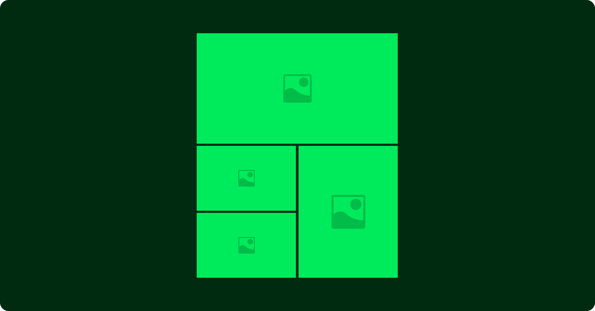
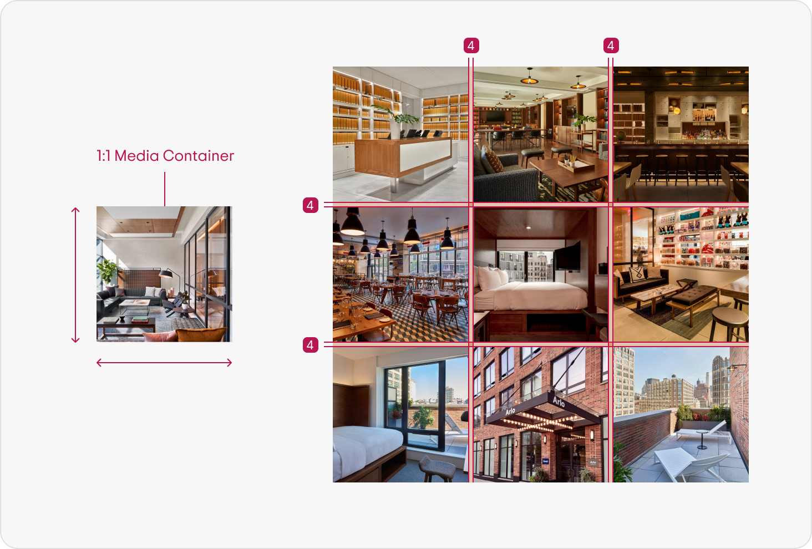
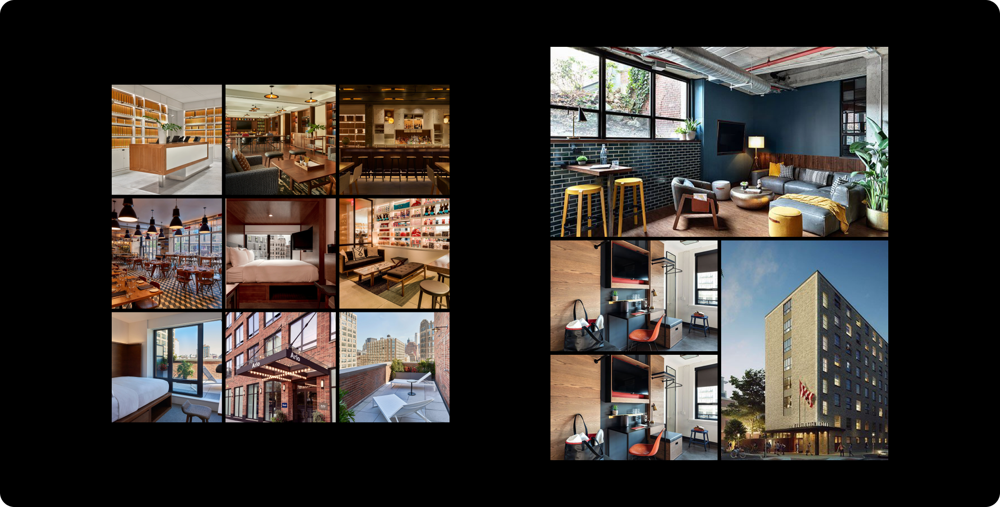

Types
There are two types of media galleries: Standard and Mosaic.
Anatomy & Appearance
Standard gallery anatomy
The standard gallery is best for media of equal importance and accessibility. It has a uniform container size, ratio, and padding between media.
Media in a standard gallery comes in only one ratio, 1:1. The width of the viewport - minus the total gutter sizing (8px) all divided by three, the number of images per row.

Dark mode

Images remains the same across light and dark mode.